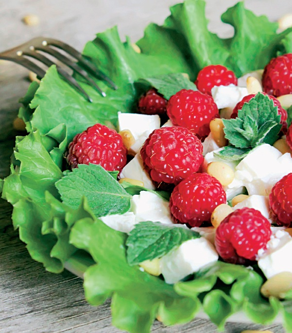
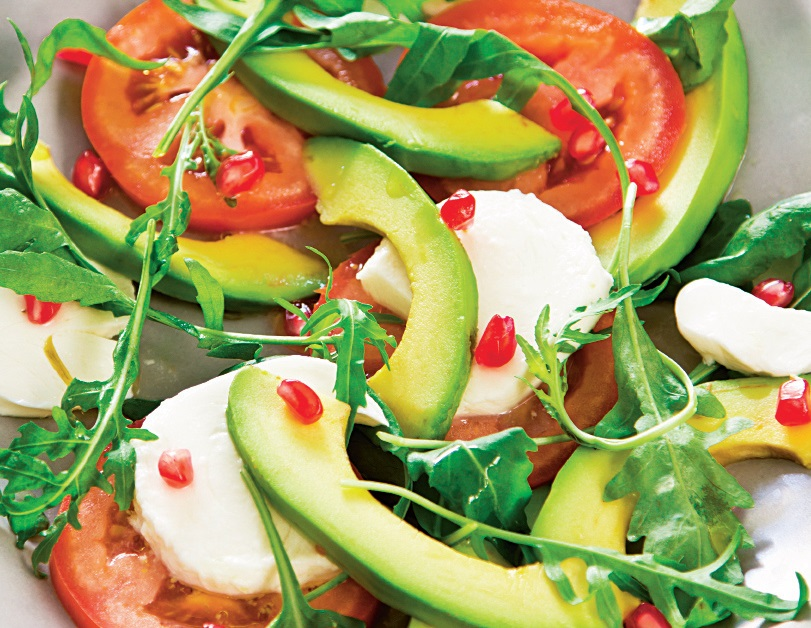
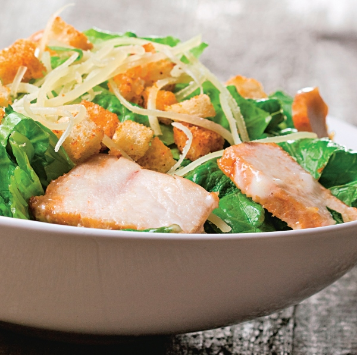

Rețete
SALATĂ GRECEASCĂ „5 MINUTE”
Ingrediente:

- 1 castravete măricel
- 3 roșii medii
- 1 ceapă(roșie de preferat)
- 100 g măsline negre dietice
- 300 g brânză feta
- 1 lingură ulei de măsline
- 1 linguriță oțet balsamic
- oregano, sare și piper după gust
Mod de preparare:
O aromă și un gust aparte. Poate fi consumată în orice moment al zilei, ca fel principal ori garnitură alături de o friptură delicioasă. Din fericire, este un preparat ce se pregătește în doar câteva minute, cu minim de efort, așa Ușoară, gustoasă, sănătoasă, autentică, ieftină și sățioasă. Salata grecească este o alegere ideală pentru momentele în care vrei să mănânci ceva bun cu minimum de efort. Fie că o mănânci ca masă principală într-o zi toridă de vară, că o iei ca pechet la serviciu sau că o folosești drept garnitură la un grătar, salata grecească rapidă te va scoate din încurcătură. Salata grecească este un preparat gustos, rapid, sățios și plin de culoare. Legumele proaspete de vară îi aduc salatei că mai jos îți spunem cum poți să îți pregătești o salată grecească. Spală bine toate legumele, taie-le și adaugă-le într-un bol mare. Îți trebuie un vas cât mai mare pentru a putea amesteca în voie toate legumele, fără să dai pe dinafară. După ce ai pregătit legumele pentru salata grecească, pregătește dressingul. Combină uleiul cu oțetul și condimentele, apoi toarnă totul peste legume. Amestecă bine salata grecească și las-o 5 minute înainte de a servi. Nimic mai simplu!
SALATĂ CU PEPENE ROŞU ŞI PUI
Ingrediente:

- 1 ceașcă oțet balsamic
- 500 g piept de pui
- 3 lingurițe condimente carne de pui
- 1 lingură ulei de masline
- 4 cești spanac crud sau fasole verde păstăi fiartă
- 2 cești pepene roșu cubulețe
- 1/2 ceașcă brânză cu mucegai
- 1/4 ceașcă migdale pisate
Mod de preparare:
Toarnă oţetul balsamic într-o tigaie adâncă şi adu la fiert. Redu flacăra când clocoteşte şi mai fierbe la foc mic 15-20 minute, până se reduce şi devine un sos gros. Separat, pune pe foc un grătar sau tigaie de teflon sau ceramică. Condimentează puiul pe ambele părţi şi picură ulei de măsline. Frige carnea pe grătar şi taie cubuleţe. Pune straturi de spanac, pui, pepene roşu, brânză cu mucegai şi migdale într-un castron. Pune straturi de spanac, pui, pepene roşu, brânză cu mucegai şi migdale într-un castron.
SALATĂ DE BRÂNZĂ
Ingrediente:
- 1/2 roată brânză Camembert
- 2 linguri muguri de pin
- 5 frunze mentă
- 200 g zmeură
- câteva foi de salată
Mod de preparare:
1. Se spală frunzele de salată şi se aşază pe un platou întins.
2. Brânza se curăţă de coajă, dar se poate lăsa pentru cei cărora le place. Se taie cuburi şi se pun peste salată.
3. Mugurii de pin se prăjesc 2 minute în tigaia încinsă fără ulei, apoi se pun peste brânză.
4. Se aşază zmeura spălată rapid şi se aduce salata la masă, ornată cu frunze de mentă.
SALATĂ CU MOZZARELLA
Ingrediente:
- 100 g Mozzarella proaspătă, în zer
- 1 avocado
- 3 roșii
- 1 barchetă salată ruccola
- 1 rodie
Pentru sos:
- sucul unei lămâi
- 5 linguri ulei de măsșine
- sare
Mod de preparare:
1. Se taie fructul de avocado în două pe lung şi apoi cele două jumătăţi se întorc în sens invers una faţă de cealaltă. Se scoate sâmburele care se aruncă iar pulpa se curăţă de coajă şi se taie lamele cât mai fin. Se pune în castronul de salată unde
se adaugă felii de roşie.
2. Fructul de rodie se taie iar seminţele se pun într-un vas cu apă rece. Se lasă aşa 2-3 minute până când boabele roşii se lasă la fund iar filamentele albe plutesc deasupra apei. Se scurg apoi boabele de apă şi se pun
în castron.
3. Se taie felii Mozzarella Granarolo, se adaugă în castron şi se presară salata rucola.
4. Într-un borcan cu filet se pune sucul de lămâie şi sarea şi se amestecă pentru ca sarea să se topească. Apoi, se adaugă uleiul, se pune capacul şi se agită borcanul pentru a obţine un sos omogen. Se aduce salata la
masă cu sosul alături.
SALATĂ CAESAR
Ingrediente:
- 150 g piept de pui
- 6 felii pâine
- 2 linguri de ulei
- 2 salate verzi
- 2 linguri parmezan
- sare și piper
Pentru sos:
- 4 fileuri de anșoa
- 1 ligura capere
- 150 ml smântână
- sare și piper
- 1 lingură oțet de vin
- 1 cățel de usturoi
- 1 lingură parmezan ras
Mod de preparare:
1. Se prepara întâi sosul pentru care se pun într-un vas fileurile de ansoa taiate, caperele si usturoiul feliat. Se adauga smântâna şi oţetul si se mixeaza. Dupa completa marunţire, se potriveste gustul cu sare, piper si un pic de parmezan ras. Se da
la rece.
2. Carnea se unge cu o lingura de ulei si se prajeste în tigaie 5 minute. Apoi, pâinea taiata cuburi se rumeneste de asemenea în tigaie cu a doua lingura de ulei. Se scot pe servete de hârtie.
3. Într-un castron se pune salata spălată, apoi se asaza carnea taiata, crutoanele de pâine si parmezanul ras. Se sareaza şi se pipereaza dupa gust şi se aduce la masa cu sosul alaturi.